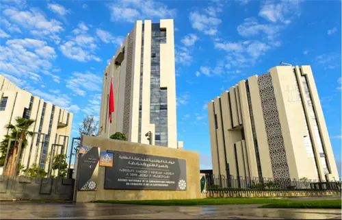

In Morocco, owning property without a title deed carries considerable risk. Without registration, the property is exposed to disputes, encroachments, and complications in any transaction (sale, donation, mortgage). Yet according to the ANCFCC, a large portion of Moroccan territory remains unregistered.
This guide explains everything about land registration in Morocco: why to do it, how it works, and what role the surveyor plays.

What is Land Registration?
Land registration is the official procedure by which a property (land, house, building) is recorded for the first time in the land registry of the ANCFCC (Agence Nationale de la Conservation Foncière, du Cadastre et de la Cartographie).
At the end of this procedure, a title deed is issued. This title deed is:
- Very difficult to challenge once established: the registration procedure is backed by strong safeguards that make any subsequent reversal extremely complex
- Known to third parties: the rights entered on it are presumed to be known to all
- Extinguishes prior undeclared rights: rights not declared during the procedure are extinguished
- Strong legal security over the property
- Easier access to bank financing (mortgage possible)
- Speeds up property transactions (sale, donation, inheritance)
- Generally required for an official building permit
- Protection against encroachment and double sales
Individual vs. Collective Registration
Cadastral technical file — plan review
- Individual registration (voluntary): the property owner takes the initiative to file a registration application with the ANCFCC. This is the most common procedure for individuals and developers.
- Collective registration: the State decides to register all properties in a given geographic area simultaneously. STOPSIT has carried out several collective registration contracts for the ANCFCC (El Hajeb, Sidi Slimane, Fquih Ben Saleh).
Individual Registration: Step by Step
-
Filing the registration application
The owner (or their representative) files a registration application at the local ANCFCC office, accompanied by the cadastral technical file (DTC) prepared by a licensed surveying engineer.
-
Publication in the Official Gazette
The ANCFCC publishes a registration notice in the Official Gazette and posts local notices. This opens an opposition period during which any third party may contest the registration.
-
Official boundary survey by the ANCFCC surveyor
An ANCFCC surveyor carries out the contradictory boundary survey: neighbouring owners are notified and the limits are established. A prior boundary survey by STOPSIT greatly facilitates this step.
-
Processing of any oppositions
If oppositions were filed, they are examined by a first instance court judge. In the absence of opposition, or after resolution, the procedure continues.
-
Registration and delivery of the title deed
The ANCFCC carries out the final registration and issues the title deed, which specifies the boundary coordinates, area, registered rights, and owner's identity.
The Cadastral Technical File (DTC): The Key Document
The cadastral technical file is prepared by the licensed surveying engineer and must accompany every registration application. It includes:
- The location plan (situating the property in its environment)
- The dimensioned topographic plan (with boundary marker coordinates)
- The coordinate table for all vertices
- The calculated area
- The technical presentation note
- Site recognition photographs
An incomplete or non-compliant DTC will be rejected, delaying the entire procedure. STOPSIT, confirmed ANCFCC partner since 2006 with over 2,900 files processed, guarantees the compliance of every DTC it prepares.
The duration of the registration procedure varies depending on the file's complexity, the presence or absence of oppositions, and the workload of the relevant ANCFCC office. In straightforward cases (clean title, no opposition), expect between 6 months and 2 years. STOPSIT prepares complete files to minimise the risk of requests for additional information.
Special Cases: Updating an Existing Title Deed
- Subdivision: splitting an already-registered plot into several lots
- Merger: combining several adjacent plots into one
- Concordance update: updating the title following construction on the property
- Transfer of ownership: recording a sale, donation, or inheritance
In all these cases, a new DTC prepared by a licensed surveyor is required. STOPSIT handles all of these procedures in full.
Conclusion
Land registration is the best protection you can give your property assets in Morocco. If your land is not yet registered, don't wait — every year without a title deed is a year of vulnerability.
Contact STOPSIT today for a free assessment of your situation and a personalised quote for your cadastral technical file.